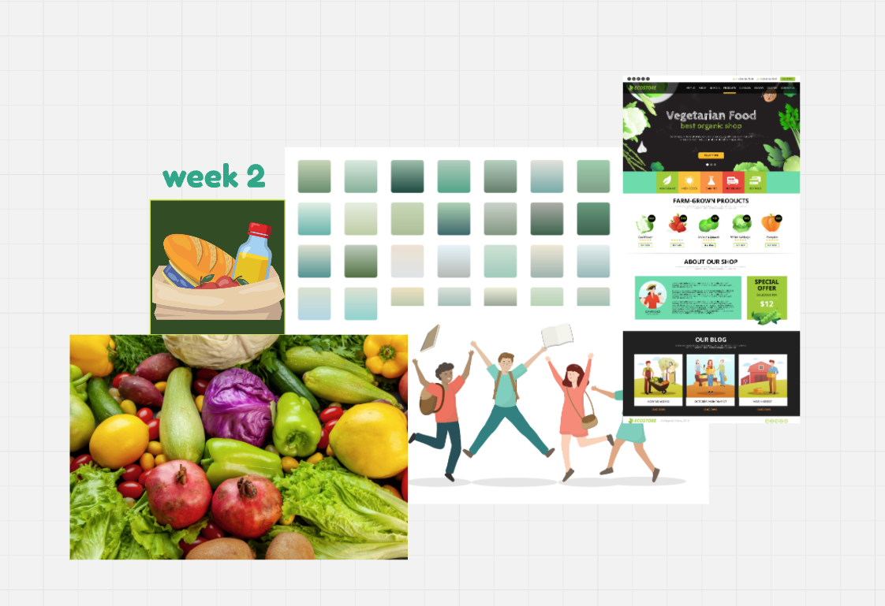

Audience Analysis
| Audience Characteristic | Rationale |
|---|---|
| Age | 17 - 28 |
| Gender | Mixed |
| Language Proficiency | Fluent in English (Planning multi-language search bar) |
| Education Level | University Students |
| Knowledge of the Topic | Medium |
| Audience Action | Utilize pantry ingredients effectively |
1.User Persona: Student Alex

- Name: Alex Johnson
- Age: 21
- Gender: Male
- Education: 3rd Year Environmental Science Student
Background
Alex is passionate about sustainability, but he struggles with meal planning. He’s trying to minimize food waste while managing a tight student budget.
Goals
- Minimize food waste
- Learn budget-friendly cooking techniques
- Find quick, healthy meals
2.User Persona: Student Emily

- Name: Emily Parker
- Age: 18
- Gender: Female
- Education: 1st Year Psychology Student
Background
Emily is adjusting to university life and wants to eat healthier but lacks confidence in the kitchen. She needs help using up pantry ingredients creatively.
Goals
- Learn to cook nutritious meals
- Avoid food waste
- Find easy recipes that don’t require many ingredients
User Journey Mapping
| Stage | Stage 1 | Stage 2 | Stage 3 | Stage 4 | Stage 5 |
|---|---|---|---|---|---|
| Objectives | Explore wellness tools | Identify food resources | Find platforms | Explore meals | Cook and review |
| Actions | Search online | Talk to peers | Browse platforms | Explore recipes | Cook meals |
| Feelings | Excited, overwhelmed | Curious | Frustrated | Happy | Accomplished |
| Touchpoints | Social media | Conversations | Recipe sites/apps | Social influencers | Reviews/Feedback |
| Challenges | Time management | Limited budget | Overwhelmed by options | Time management | Food waste |
Evaluation of Webpages
My evaluation of the BBC Good Food website highlights its excellent user experience due to intuitive navigation and engaging design. The homepage is clean, with well-categorized sections and a clear focus on food-related content. The search functionality is robust, offering easy access to a wide range of recipes tailored to user preferences. However, the abundance of advertisements and pop-ups can occasionally detract from the user experience, making navigation slightly cumbersome. The inclusion of nutritional information and filters such as dietary preferences enhances accessibility, particularly for health-conscious users. Overall, BBC Good Food effectively balances aesthetic appeal with practical functionality.
Mood Board
Reflection point
As I explored various websites related to food, such as BBC Good Food and Allrecipes, my journey became an invaluable learning experience that shaped the design of The Student Pantry. I quickly realized that while these sites offered great recipes, they didn't address the specific needs of students, like reducing food waste or maximizing limited ingredients. By applying the principles of design thinking—empathy, ideation, prototyping, and testing—I was able to create a more tailored solution. I focused on understanding students' frustrations with meal prep and food waste, ideating a platform where they could easily input ingredients to find quick, sustainable recipes. The iterative process of prototyping allowed me to refine the website, ensuring it was both functional and user-friendly, with the goal of empowering students to make the most of their resources while promoting sustainability.